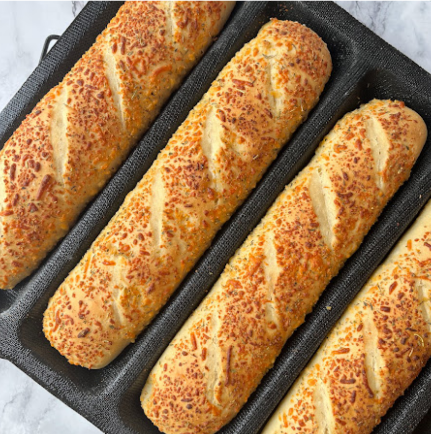

Italian Herb Cheese Bread

A delicious buttery Italian cheese bread.
Ingredients
Steps
-
Place warm water, flour, pepper Jack cheese, Italian seasoning, black
pepper, Parmesan cheese, brown sugar, salt, and yeast in the pan of a
bread machine in the order suggested by the manufacturer.
- Select White Bread or Basic cycle, then Start.